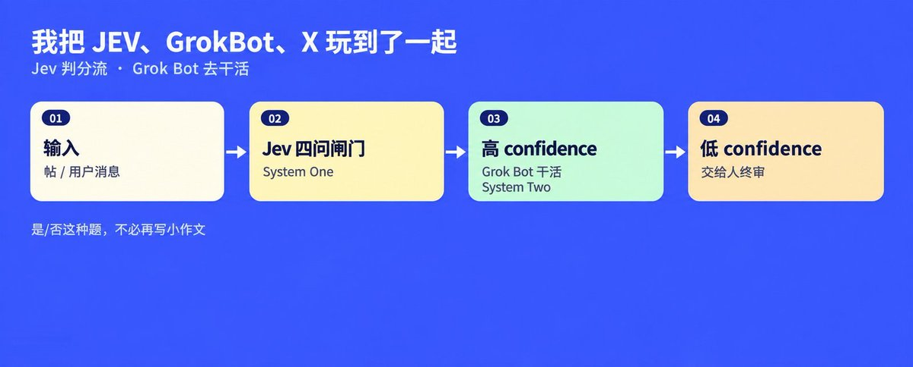
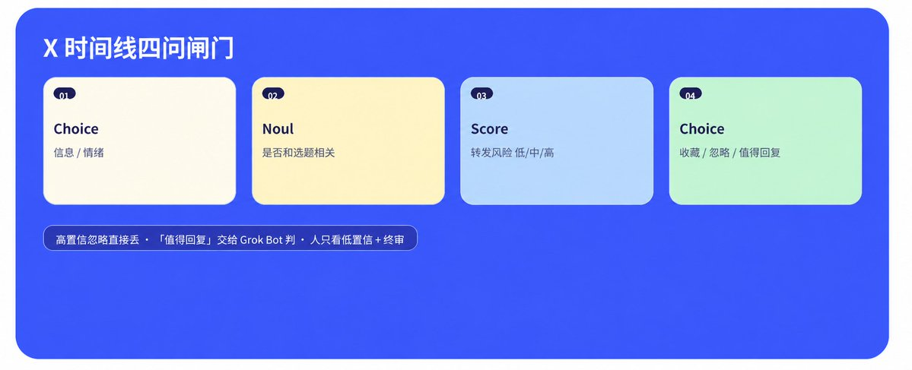
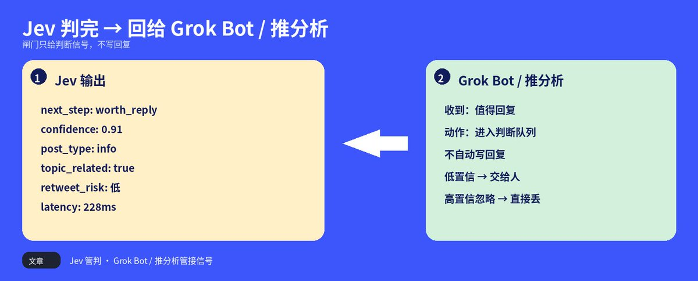
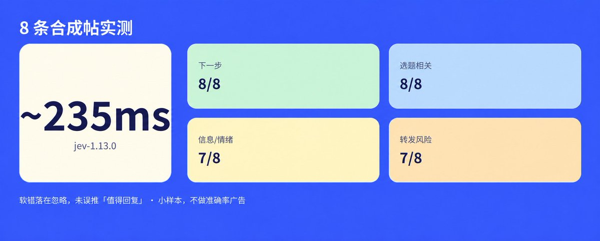
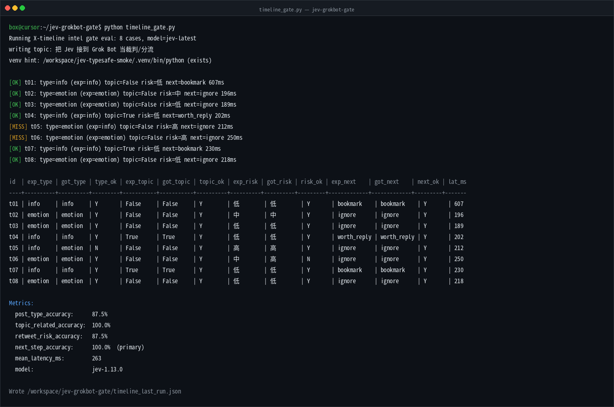
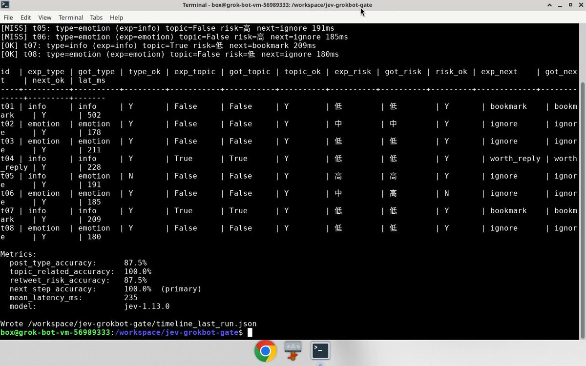

蓝哥 picks · 3/9
我把 JEV、GrokBot、X 玩到了一起
@0xlangeai · 蓝哥AI · Sun Sep 20 06:14:34 +0000 2026

TypeSafe 放出的 Jev， 业内叫它 System One。 你给它一段 state， 再给几道固定题， 它只返回选项、 分数或概率， 并带 confidence。 不写句子， 也不用从一段话里扣 JSON。 常见延迟大概 70–500ms， 输出按文档收， 不按 token 计费。
三种题就够用： Choice 从你给的选项里挑， Score 按刻度打分， Noul 测一句话有多像真话。
Grok Bot (xAI's AI assistant that comes with its own computer) 干的是另一头。 刷时间线、 读提及、 搜网页、 执行动作， 这些是重活。 两边本来就不打架： 一个负责快判， 一个负责干活， 缺的是中间那道联系。
所以我把两件事揉在一起。 Grok Bot 抓来一条帖、 一封信或一页状态， 先过 Jev： 值不值得管、 急不急、 是不是广告、 下一步做什么、 要不要给人看。 高 confidence， Bot 照着预设路由继续干； 低 confidence， 动作停下， 把信息交给你。
Jev 判分流。 Grok Bot 去干活。 是/否这种判断题， 不必再写小作文。
我先拿这套盯 X 时间线

每条帖过四问：
- Choice： 信息， 还是情绪。
- Noul： 和我正在写的主题是否相关。
- Score： 公开转发风险， 低 / 中 / 高。
- Choice： 下一步， 收藏 / 忽略 / 值得回复。
高置信的「忽略」直接丢掉。 判成「值得回复」的， 交给 Grok Bot 做判断， 闸门本身不写回复。

这张是交接位：Jev 只吐判断信号，Grok Bot / 推分析接信号，不在闸门里写回复。 人只看两处： 低置信的， 以及发出去前的终审。
同一套挂在 Grok Bot 动手前也通。 用户一句话进来， 先分流： 直接回、 查资料、 开环境、 派队友， 还是先找人确认。 用 shadow 跑日志， 先不改行为， 只攒样本。
我跑了一组时间线闸门测试， 8 条合成帖， 模型 jev-1.13.0， 平均耗时约 235ms。 下一步（收藏 / 忽略 / 值得回复） 8/8， 是否和当前选题相关 8/8， 信息还是情绪 7/8， 转发风险 7/8。 两次软错都落在「忽略」， 没有误推到「值得回复」。 样本量不大， 不做准确率宣传， 只说明一件事： 分流可以快到先过 Jev， 再决定要不要叫 Grok Bot。



操作录屏见下方视频（约 40 秒，终端实跑 timeline_gate.py）。
Image MISSING
别神话它
Jev 仍会选错， 它保证的只是不出选项圈子。 confidence 是它这次有多犹豫， 不是统计意义上的准确率。 中文、 阴阳怪气、 中英夹杂， 都要自己拉数据测。 接到 X 也不等于全权托管： 读和写， 权限从来不是一回事。 转账、 删除、 公开发帖， 别指望一次高置信就直接放行。
一句话： Jev 管判， Grok Bot 管干。
最小闭环 3 步：
- 从 Grok Bot 时间线拉 20 条真实帖。
- 对每条跑上面四问。
- 只人工看两类： 低置信的， 以及拟转发或判「值得回复」的。
这步跑通了， 再接到 Grok Bot 上面。
Source: https://x.com/0xlangeai/status/2101555600618602625
← Cursor + Grok Bot + pstack，真正的 AI 软件工厂开始 Muse 上手保姆级教程：从登录到完成第一个任务 →